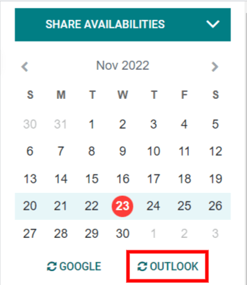
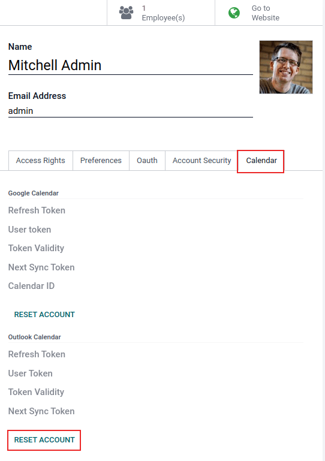

Sincronizar el calendario de Outlook con Odoo¶
Sincronizar el calendario de Outlook de un usuario con Odoo es útil para llevar registro de sus tareas y citas en todas las aplicaciones relacionadas.
Configuración de Microsoft Azure¶
Para sincronizar el calendario de Outlook con el calendario de Odoo necesitará una cuenta de Microsoft Azure. Crear una cuenta no tiene costo para los usuarios que nunca han probado o pagado por Azure. Consulte las opciones relacionadas con las cuentas en el sitio web de Azure para obtener más información.
Consulte la documentación de Microsoft sobre la configuración de un ID de Microsoft Entra (antes conocido como Microsoft Azure Active Directory (Azure AD)). Esta es una consola de API para gestionar y registrar aplicaciones de Microsoft.
Los usuarios existentes de Microsoft Entra ID deben iniciar sesión en el portal para desarrolladores de Microsoft Azure. Seleccione Ver en la sección etiquetada como Gestionar Microsoft Entra ID.
Registrar una aplicación¶
Después de iniciar sesión con su Microsoft Entra ID, registre una aplicación.
Haga clic en el botón + Agregar del menú superior para crear una aplicación y en el menú desplegable seleccione Registro de aplicación.

Proporcione un nombre único para la aplicación a conectar.
Elegir el tipo de cuenta admitido es muy importante, de lo contrario la aplicación conectada no funcionará. Los usuarios que deseen conectar su calendario de Outlook con Odoo deben elegir la opción Cuentas en cualquier directorio organizativo y cuentas Microsoft personales (como Skype y Xbox) como tipo de cuenta admitido.
Al configurar el identificador URI de redirección, seleccione la opción Web en el primer menú desplegable. Después, escriba el URI de la base de datos de Odoo (URL) y agregue /microsoft_account/authentication.
Example
Escriba https://subasededatos.odoo.com/microsoft_account/authentication en el identificador URI de redirección. Reemplace subasededatos.odoo.com con la URL.
Truco
Asegúrese de que la URL de la base de datos (dominio) que se usa en la URI sea idéntica al dominio configurado en el parámetro del sistema web.base.url.
Active el modo de desarrollador para acceder a web.base.url y vaya a . Después, selecciónelo en la lista Clave de la página de parámetros del sistema.

Consulte la página Restricciones y limitaciones del identificador URI de redirección (dirección URL de respuesta) de Microsoft para obtener más información sobre las restricciones y limitaciones de los identificadores URI.
Por último, en la página de registro de la aplicación, haga clic en el botón Registrar para completar el registro correspondiente. Se generará el ID de la Aplicación (cliente). Copie este valor, ya que lo necesitará más adelante para la sección Configuración en Odoo.

Crear el secreto de cliente¶
La segunda credencial necesaria para completar la sincronización del calendario de Outlook de Microsoft es el secreto del cliente. El usuario debe agregar un secreto del cliente, pues este permite que Odoo se autentique a sí mismo sin necesidad de que el usuario haga algo más. Los certificados son opcionales.
Haga clic en en el menú izquierdo para agregar un secreto del cliente y después haga clic en + Nuevo secreto del cliente para crearlo.
Después escriba una descripción y seleccione cuándo expira el secreto del cliente. Las opciones disponibles son: 90 días (3 meses), 365 días (12 meses), 545 días (18 meses), 730 días (24 meses) o Personalizado. La opción Personalizado permite que el administrador establezca una fecha de inicio y una fecha de finalización.
Para finalizar, haga clic en Agregar para agregar un secreto del cliente.
Truco
Restablecer la sincronización puede ser complicado, así que le recomendamos que la fecha de vencimiento que configure el plazo máximo permitido en el secreto del cliente (24 meses o personalizado) para que no tenga que volver a realizar la sincronización pronto.
Copie el valor, deberá usarlo en la siguiente sección.
Advertencia
Los valores del secreto del cliente solo son visibles después de crearlos, asegúrese de guardarlo antes de salir de la página.
Configuración en Odoo¶
En la base de datos de Odoo, vaya a y seleccione la casilla ubicada junto a Calendario de Outlook. Recuerde hacer clic en Guardar para implementar los cambios.

Desde el portal de Microsoft Azure, en la sección Resumen de la aplicación, copie el ID de la aplicación (cliente) en caso de que no lo haya hecho y péguelo en el campo ID del cliente en Odoo.

Copie el valor anterior (el valor del secreto de cliente) y péguelo en el campo Secreto del cliente en Odoo.

En Odoo vaya a y haga clic en Guardar.
Sincronizar con Outlook¶
Advertencia
Odoo le recomendamos que primero haga una prueba de la sincronización del calendario de Outlook en una base de datos de prueba con un correo electrónico de prueba (es decir, uno que solo use para esto) antes de hacer la sincronización en una base de datos en producción.
Si el usuario tiene eventos pasados, presentes o futuros agendados en su calendario de Odoo antes de sincronizarlo con su calendario de Outlook, Outlook considerará estos eventos como eventos nuevos. Esto causará que se envíe una notificación de correo electrónico desde Outlook a todos los asistentes al evento.
Para evitar que se manden correos no deseados a asistentes pasados, presentes y futuros, el usuario debe agregar los eventos que tenga en el calendario de Odoo al calendario de Outlook antes de hacer la primera sincronización. Luego, borre todos los eventos del calendario de Odoo e inicie la sincronización.
Incluso después de sincronizar el calendario de Odoo con el de Outlook, este último le enviará una notificación a todos los participantes de los eventos siempre que se editen, (ya sea que se cree, borre, desarchive, o se cambie la fecha y hora del evento) sin excepciones. Esta es una limitación que no se puede solucionar desde Odoo.
Para resumir, una vez que un usuario sincroniza el calendario de Outlook con Odoo:
Si crea un evento en Odoo, se enviará una invitación de Outlook a todos los asistentes al evento.
Si elimina un evento en Odoo, se enviará un correo de cancelación a todos los asistentes.
Si desarchiva un evento en Odoo, se enviará una invitación de Outlook a todos los asistentes al evento.
Si archiva un evento en Odoo, se enviará un correo de cancelación de Outlook a todos los asistentes al evento.
Si agrega un contacto el evento, se enviará un correo de invitación a todos los asistentes.
Si quita un contanto del evento, se enviará un correo de cancelación a todos los asistentes al evento.
Sincronización del calendario de Odoo y Outlook¶
En la base de datos de Odoo, abra el módulo Calendario y haga clic en el botón de sincronización de Outlook ubicado en el lado derecho de la página, abajo del calendario mensual.
La sincronización es un proceso bidireccional, lo que significa que los eventos se concilian en ambas cuentas (en Outlook y en Odoo). La página redirige a una página de inicio de sesión de Microsoft que le pide al usuario que inicie sesión en su cuenta, si aún no lo ha hecho. Por último, haga clic en Aceptar para proporcionar los permisos necesarios.

Nota
Todos los usuarios que deseen usar la sincronización solo necesitan sincronizar su calendario con Outlook. La configuración de la cuenta de Microsoft Azure solo se realiza una vez, ya que el ID de cliente y el secreto de cliente de los inquilinos de Microsoft Entra ID son únicos y ayudan al usuario a gestionar instancias específicas de los servicios en la nube de Microsoft para sus usuarios internos y externos.
Solución de problemas relacionados a la sincronización¶
Es posible que en algunas ocasiones la cuenta del calendario de Microsoft Outlook no se sincronice de forma correcta con Odoo. Es posible consultar los problemas de sincronización en los registros de la base de datos.
En estos casos es necesario solucionar los problemas de la cuenta y es posible restablecerla con el botón Restablecer cuenta. Vaya a , seleccione el usuario del que se debe modificar el calendario y haga clic en la pestaña Calendario.
Después, haga clic en el botón Restablecer cuenta del calendario correcto.
Opciones de restablecimiento¶
Las siguientes opciones de restablecimiento están disponibles para solucionar problemas de sincronización del calendario de Microsoft Outlook con Odoo:

Eventos existentes del usuario:
Dejarlos intactos: no ocurren cambios en los eventos.
Eliminar de la cuenta actual del calendario de Microsoft: elimina los eventos del calendario de Microsoft Outlook.
Eliminar de Odoo: elimina los eventos del calendario de Odoo.
Eliminar de ambos: elimina los eventos del calendario de Microsoft Outlook y del calendario de Odoo.
Siguiente sincronización:
Sincronizar solo los eventos nuevos: sincroniza los nuevos eventos en el calendario de Microsoft Outlook y el calendario de Odoo.
Sincronizar todos los eventos existentes: sincroniza todos los eventos en el calendario de Microsoft Outlook y el calendario de Odoo.
Haga clic en Confirmar después de hacer la selección para modificar los eventos del usuario y la sincronización del calendario.